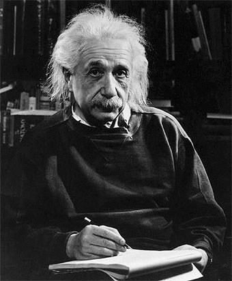

Nació el 14 de marzo de 1879, en Ulm (Alemania). Murió el 18 de abril de 1955,
en Princeton (Estados Unidos de América). Albert Einstein es quizá el científico
mundialmente más conocido por el desarrollo de la Teoría de la Relatividad que revolucionó
la ciencia conocida hasta el siglo XX.
En 1894, las dificultades económicas hicieron que la familia
(aumentada desde 1881 con el nacimiento de una hija, Maya) se trasladara a Milán;
Einstein permaneció en Munich para terminar sus estudios secundarios,
reuniéndose con sus padres al año siguiente..

Durante 1905, publicó cinco trabajos en los Annalen der Physik: el primero de ellos
le valió el grado de doctor por la Universidad de Zúrich, y los cuatro restantes acabarían
por imponer un cambio radical en la imagen que la ciencia ofrece del universo.
Einstein concentró sus esfuerzos en hallar una relación matemática entre el electromagnetismo
y la atracción gravitatoria, empeñado en avanzar hacia el que, para él, debía ser el objetivo
último de la física